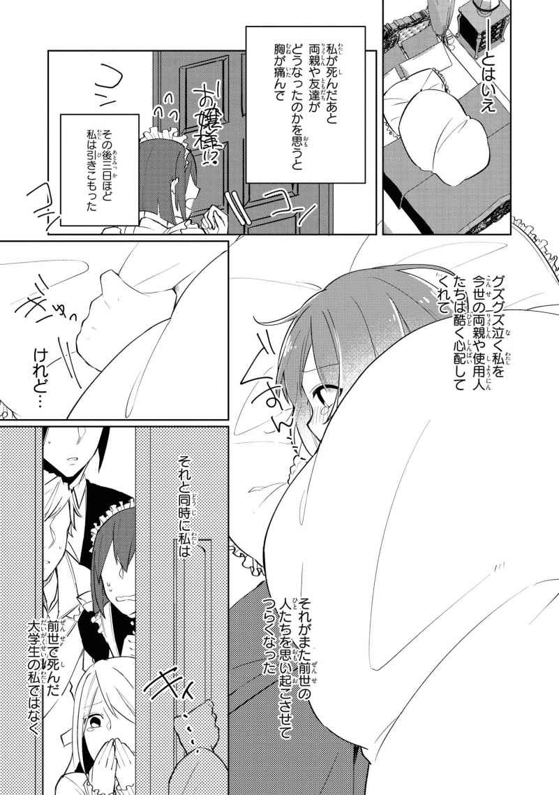
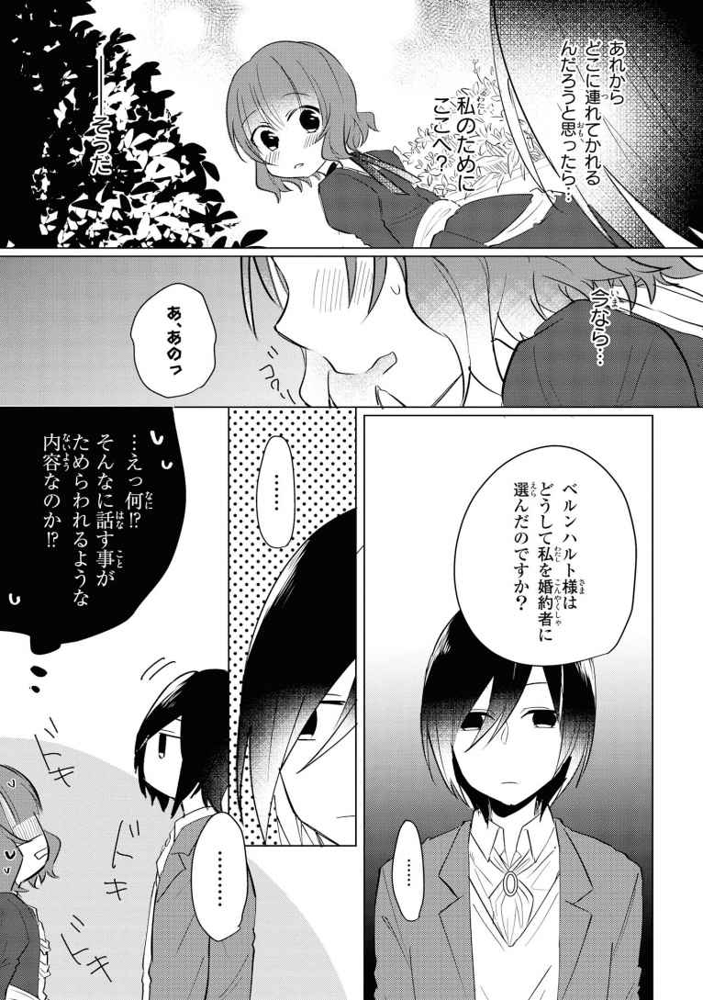

| 婚約者が悪役で困ってます ノベル＆コミック試読版 | |
| 散茶 & みつのはち | |





婚約者が悪役で困ってます
ベルンハルトと冬の諸事情
吐いた息さえも氷になって地表に落ちてしまうような、そんな寒さ。
手を
鼻をすすると乾いてこびりついた鼻血がパリパリと割れて、いまさらながら体の節々が痛むことに気づく。思わず悪態をつきたくなるが、口を開くのすら
あたりは黒々とした木が
だからだろうか。足元に横たわる男から広がる目に痛いほどの赤い色が、この上もなく不快であった。
「初めてにしては上出来じゃないか！」
隠れて様子をうかがっていた先生がザクザクと雪をかき分けながらやってくる。
えらく音が大きいのは、きっと雪を踏み鳴らすのが楽しいからなのだろう。彼はそういう子供っぽいところがある。
「これは、先生が後で片づけておこう」
先生は男の体を器用にひっくり返したつま先でもって、念入りに突いてちゃんと死んでいるかを確かめた。
ルーク先生は血の繋がらない祖父がこっそり寄越してくれた家庭教師だ。
多方面から命を狙われている僕を守り、いずれは一人でも生きていけるよう教育するために来たのだという。その言葉通り、普段は
再び視線を足元に落とすと、僕を殺しに来た男だったものは、すでに顔に
「気分はどうだい？」
鳥の巣のように
しかし、残念ながら僕は何も感じていなかった。恐れも、後悔も、喜びも、何も。
ただ少しだけ、誰かに望まれていたかもしれない命を、誰にも望まれていない自分が奪うことを申し訳なく思った。それも一瞬のことだ。
「大丈夫です」
「そうか。気丈なところは彼女に似たのかな？」
彼はよく母の話題を持ち出す。彼は母が好きだったのだと公言して
「......なぁ、ベルンハルト」
先生は急に陽気さを
「はい、ルーク先生」
「いつかお前は、僕がお前にさせたことがどれほど
僕は、彼の描く絵でしか母の顔を知らない。屋敷には母の肖像画すらないのだ。
そんな母が生きて欲しいと願ったと言われても、僕としてはそうですかとしか言いようがなかった。そんな僕の心の内を目ざとく見抜いた彼は苦笑しながら、わざわざ
「人生楽しいことはすぐに尽きるが、苦しいことは永遠に尽きることはない。けれどね、この世にはそれ一つさえあれば、他の何も必要ないと思わせてくれる愛がある。それさえあれば、どんな苦しみだって乗り越えられるだろう。少なくとも僕はそう思っている。......信じてくれないかもしれないけれど、僕はお前がそれに出会えることを本当に願っているんだよ」
彼がどうしてそのようなことを言い出したのか、僕にはとんと見当もつかなかった。
もしかしたら彼なりに、幼い子供に人殺しの
「先生も、その愛とやらに出会えましたか？」
「ああ。......この胸の中に十分すぎるほどに」
本職は画家だというだけあって、先生はロマンチストだ。
まだ十にもなっていなかった僕は、ぼんやりとそう思って特に信じもしなかった。
一章 出会い
ある日、私は気がついた。
私には二人分の記憶がある、と。
昔からおかしいとは思っていた。私はこの世界にはない物、例えばエレベーターとか自動車とかを知っていたり、高いビルの立ち並ぶ風景を知っていた。私がいま生きる世界は中世のヨーロッパに似てるなぁなんて思って、中世のヨーロッパってなんだ？ となったこともあった。
そのことを相談しても理解してくれる人は一人もいなくて、私はずっと妄想癖のあるちょっと変わった子だと周囲から思われてきたのだ。
そして今日、私は思い出した。
前の私が死んだ時のことを。
そしてようやく私の中でごっちゃになっていた二人分の記憶が整理され、分離して、私は前世の記憶を持ったまま生まれてしまったのだと理解した。戸惑いは少なかった。どちらかといえば、すっきりしたという感じが強いかもしれない。
自分がどうして死んだのかは割愛させてもらいたい。正直あまり気持ちのいい話でもないし、何よりそれはもう起こってしまって、終わってしまったものだからだ。
とはいえ私が死んだあと両親や友達がどうなったのかを思うと胸が痛んで、そのあと三日ほど私は引きこもった。
布団を引っかぶってグズグズ泣く私を今世の両親や仲のいい使用人たちは
それからすぐに立ち直れたわけじゃなかったけれど、今度の両親も貴族として接しながらも親として愛してくれていると十分わかっていたし、死んじゃったものは仕方ない。それに文句を言ったって現実は変わらないし、だいたい誰に文句を言えばいいのかもわからないのだ。せめて今世では親孝行しよう！ と私は前向きに生きていくことを決めたのだった。
そんな私が転生を理解してから半年後、王宮からの招待状が届いた。
なんと、今年十二歳になるエドウィン王子の婚約者候補を集め、
いやぁ、私も一応侯爵令嬢ですし～！ まさかまさかで、殿下に選ばれちゃったりなんかして～！ なんて一瞬調子に乗ったが、鏡に映る自分を見てすぐに反省した。
残念なことに転生しても私の容姿は劇的に、特に美人方面には変化していなかったからだ。
ありふれたちょっと癖っぽい
というわけで舞い上がったテンションを打ち落として、もはや地面にめり込ませて私は王宮のお茶会に向かったのだった。
令嬢方のつけている香水が野外なのにまとわりついて、せっかくのバラの香りを消してしまっている。
はなからやる気のない私といえば隅のテーブルでお菓子をつまんで、十歳前後のご令嬢方が早くも誰が一番に殿下に挨拶するか大人顔負けな様子で
みんな子供らしく遊べるのはいまだけだろうに。ちょっと友達ができるんじゃないかなんて期待をしていただけに、つまらなく感じてしまう。
両親からとりあえず楽しんでおいでと期待ゼロで送り出された私と違って、他の令嬢はその小さな背中に家を背負って来ているのだろう。仕方ないっちゃ仕方ない。まぁ、中には殿下に会ったことがあって本気で殿下が好きで来ている子もいるのだが。
その一人が、ブルンスマイヤー公爵家のカテリーナだ。近くにいた子たちがひそひそ
真っすぐな銀髪に気の強そうな青い瞳。将来美人になるのは確実だが、たぶん意地の悪そうなという但し書きがつく感じだ。
カテリーナに
孤高の一人を楽しんでいると、ふらっと横に誰かがやってきた。
もしかして私と同じくやる気のない令嬢が！ これは戦力外同士、仲良くしようではないかとワクワクして横を向くと、見えたのはフリフリなドレスではなく男性物の上着。
殿下のお友達候補のうちの一人にいた、真っすぐな黒髪が印象的なほっそりとした少年だ。
こ、これは話しかけたほうがいいのだろうか？ いやでも、前世足して彼氏いない歴三十一年の女がそう簡単に男の子に......！ 親戚の子と思えば......。いや、無理！ だってなんだかんだ言っていま私十歳だし、それなりに恥じらいってものがですね。
脳内会議が大混乱する私に、少年は長めの前髪からのぞく灰色の瞳を向ける。
ぎゃーーー！ 何この子、めっちゃ美形！
細く涼しげな目元はよく見ると垂れ気味で、鼻筋もすっと通っていて。あ、でもちょっと無表情すぎて怖い気もする......というか、なんか、見覚えが。
「君はあの中にいかなくていいの？」
少年はパステルカラーのドレス集団を指さす。
いやいやあんな恐ろしいところ、私みたいな身分以外平々凡々な女がいけませんよと内心
「そう」
少年の短い返事に肩透かしを食らう。話しかけてきたわりには興味薄いな、おい。
「あ、あの私、リートベルフ侯爵の娘、リジーアと申します」
家庭教師の先生に教えてもらった通りの淑女の礼をして、自己紹介をする。実は身内以外にするのはこれが初めてだったりするので、相当緊張していた。
少年は温度のない瞳で私の礼を受け取った後、自分も名乗りをあげた。
「僕はベルンハルト・ユース・ブルンスマイヤー。よろしく」
「は、はい」
「あそこで
「威嚇」
ベルンハルトはぼんやりとした雰囲気のわりに意外と毒舌なようだ。たしかに絶賛牽制中のカテリーナは、毛を逆立ててシャー！ と威嚇する猫にも見えんこともない。
いや、そんなことよりも、ベルンハルトという名前が異様に引っかかる。それにカテリーナという名前も......。
この二つの名前を私はどこかで見たことがある。
どこだったろうか。
貴族名鑑？ いや違う。
たしか......画面。そう画面だ。それもテレビの......。
にわかに黄色い悲鳴が響き渡って、私は現実に引き戻される。殿下が現れたのだ。パステル軍団がざわざわと揺れている。
私はさび付いた
中央のテーブルでカテリーナから挨拶を受ける殿下はまさに理想の王子様だった。金髪
ただの偶然だと否定する間もなく、ずっと引っかかっていたカテリーナとベルンハルトについての記憶を思い出し、私はさあっと血の気が引いていくのを感じた。
「大丈夫？」
「だ、大丈夫です」
ごめん。全然大丈夫じゃない。私のことは気にしないでくれ。いや、気にしないでくれください。
パニックに
実はこのぼんやりした美少年こそ、乙女ゲーム「ライラックの君」のメインヒーロー、エドウィン王子ルートにおける最大の悪役なのだ。ちなみに、彼の妹カテリーナは主人公のライバルキャラ。
とにかく
脚から力が抜けしゃがみ込みそうになった瞬間、誰かが私の手をつかんだ。前のめりになっていた体がぐっと引き戻される。
それはベルンハルトの手だった。
「え？」
彼はぱっと手を放すと、さっきまでのぼんやり具合が
バラの通路を通って、私の歩幅に合わせてゆっくり歩く背中が随分と頼もしい。ゲームの舞台である貴族が十五歳から通う学園でたしか彼は殿下と同じ三年生だったから、私の二歳上のはずだ。
今日はとても天気が良いのになんだか肌寒くて、
休憩室につき、
「具合が悪いようなので、少し休ませたい。何か温かいものを持ってきてくれないか」
人間慌てている人を見ると冷静になるとはよく言うが、私の顔色がそんなに悪いのか大慌てする侍女さんを見てハッと気を取り直すことができた。
「ベルンハルト様、ありがとうございます。でも、少し気分が悪いだけで私は」
「そうか」
と言葉を遮って私を椅子に座らせ、自分は横に座ってしまう。
絶対そうかじゃない。人の話聞いてる？ い、いったい何を考えているのかわからん......。
というかベルンハルトってこんな無表情キャラだったっけ？ ゲームに出てくる成長した彼は、人当たりが良くていつも穏やかな微笑みを浮かべているが、本心をたくみに隠す計算高い、いわゆる裏表のあるキャラだったように覚えているのだが。まぁ、おいおいそうなっていくのだろう。
「殿下とお話ししなくてもよろしいのですか？」
「いいんじゃない？」
え～。ゆるすぎだろ......。
その後出された温かいハーブティーを飲んで、私の迎えの馬車が来るまで一時間ほど他愛もない話をした。主に私が乗馬に興味があるといって、ベルンハルトがぽつぽつと馬について教えてくれたわけなのだが、どういうわけか彼は私とずっと手を繋いだままだった。
一度お茶が飲みにくくないかと尋ねると、左利きだからとしれっとかわされてしまった。おかげで私の左手はあったまったわけなのだが。
「ありがとうございました」
迎えの馬車が来て、少しはショックも収まった私はお礼を伝えたが、ベルンハルトは相変わらずの無表情だ。でもたぶん根はいい子なんだと思う。おかげでここが乙女ゲームの世界だったっていう混乱にぶっ倒れることもなかったわけだし。
まぁ、彼こそが一番危険な将来の悪役になっちゃうかもしれないわけなんだけど......。
なんて
心配する御者に適当に返事をして、帰りの馬車に揺られながら私は静かに考える。
どうやら私は乙女ゲームの世界に転生なんていうネット小説にありがちなことをしてしまったようだが、主人公なんてとんでもない、ただのモブに転生したようである。
ならば私のとる行動は簡単である。
このままモブとしてゲームのシナリオに関わらず、傍観を楽しみながら親孝行し、高望みしない幸せを探せばいい。いやだって、私には私の人生があるのだ。なぜわざわざ修羅場になるとわかっているところに飛び込むのか。いや、飛び込まない！
しかし反語まで使って誓った私の決意はその数日後、はかなくも撤回せざるを得なくなった。
ブルンスマイヤー公爵から私の父に、彼の長男ベルンハルトと私の婚約を申し込む書状が届いたのだ。
＊
ちゃかぽこ、ちゃかぽこ。馬の
そして、その馬車に乗っている完全グロッキー状態な私。
車酔いのせいではない。馬車の行き先があまりにも気の重い場所であるからこそのグロッキーなのだ。
私はいま、侍女のティアをお供に魔王城、じゃなくって、ブルンスマイヤー家に向かっている。
公爵家から婚約の申し入れをもらった日。両親は、それはもう喜んだ。
だって相手はこの国でも五本の指には入る名家の跡継ぎで、しかも向こうから私を指名してきたのだ。まぁ、そりゃ
喜ぶ両親を見て、どうして拒否できるだろうか。それも嫌な理由がこの世界は私が前世でやったゲームの世界に物凄くよく似ていて、ベルンハルトは悪役になってしまうかもしれないからだなんて口が裂けても言えない。せめてベルンハルトが嫌な奴だったらよかったのだが、この間のお茶会ではお世話になっちゃってるし、しかもそのいきさつを馬鹿正直に皆に言っちゃったし。
お母さまなんて婚約の申し入れを聞いて、
「まあ！ きっと先日のお茶会でリジーアに一目ぼれしたのよ！ 運命的だわ～！」
なんて言う始末である。お母さまは良くも悪くも育ちのいいお嬢様なので、ロマンチックな恋の話が大好きなのだ。
というわけでとんとん拍子に話は決まり、申し入れを受けた一か月後には、私とベルンハルトの婚約が正式に決まってしまっていた。
お屋敷のみんなが私の顔を見るたびにおめでとうございますと言ってくれて、私はそれに毎度毎度、いや、おめでたくないんだって！ と心の中で叫びつつも笑顔を浮かべる日々。
あのぼんやり美少年が何を考えているのか、本当にわからない。
万が一にも、お母さまの言う通り一目ぼれなんてわけないしなぁ。別に自分を卑下するわけじゃないけれど、自意識過剰になれるほど私はお気楽な人間ではなかった。
婚約の理由もわからない以上、仕方ない。まずは状況整理である。
私は一か月の間にどうにかこうにかスカスカな頭を絞って整理した情報を振り返る。
残念なことに、私のゲームに関する記憶はかなりあやふやだった。
はっきりと自信を持って思い出せるのは気に入っていたスチルとキャラクターの見た目、あといくつかのエンディングくらい。
だって仕方ないじゃないか。めちゃくちゃハマってたというわけでもなかったし、他の似たようなゲームと記憶がごちゃまぜになってしまっているのだ。
しかもこのゲーム、システムがちょっと面倒くさかった。
例えば、エドウィンルートでエドウィンの好感度だけ爆上げすると、ベルンハルトの
この面倒くさいシステムはやりこみがいがあって嫌いではなかったが、おかげで私は隠しキャラを見つけることができなかった。攻略サイトは悔しくて見てなかったし、周囲には乙女ゲーム好きを隠していたからネタバレをしてくる友もいない。
チクショウ、こんなことなら余計な意地を張らずに攻略サイト見ればよかった！ まったくもって後の祭りというやつだ。
とりあえずわかっているのは、主人公がエドウィン王子とくっつくとまずいということ。
ベルンハルトの妹、主人公のライバルキャラとなるカテリーナはエドウィンの婚約者で、突然現れてエドウィンと
いじめの内容は無理難題を押し付けたり、頬をはたいたりするというもので、ねちねちした嫌がらせよりは、正々堂々と向かってくるあたり彼女は直情的な人間であると言える。
というか、ゲームタイトルが「ライラックの君」だから主人公の名前ライラって単純すぎない？ 大丈夫？
そんなことはおいといて。
当たり前のようにカテリーナはエドウィンと他の攻略対象たちから断罪され、婚約も破棄されてしまう。
これを受けてカテリーナを溺愛するブルンスマイヤー公爵はエドウィンを暗殺し、まだ幼く操りやすい第二王子を次期王にすることを画策する。ように最初は見えるのだが、実はこの計画の主格は皆さんご存知のベルンハルトなのだ。
ゲームの舞台である学園で彼はエドウィンと同じ主人公の二つ上の先輩。攻略対象ではないお助けキャラ、いわゆる手に入らない殿方枠として登場する。
エドウィンルートでの彼はエドウィンの友達として、身分の違いや気持ちのすれ違いに悩む主人公の話を穏やかに聞いて、時にはアドバイスをしてくれたりする。二人が付き合い始めるとお祝いしてくれるし、
そんな彼がなぜ暗殺を企てるのかというと、ベルンハルトはなんとずっと主人公のことが好きだったのだ。
こんなに優しくしてくれるんだから好きに決まってるでしょうよ！ と
計画が失敗した時のために父を表向きの主格にしたて、彼はエドウィンを暗殺し主人公を手に入れようと考えたのだ。バッドエンドは死んで終わり、何もわからないのだが、暗殺を回避したハッピーエンドで彼は全てを暴かれ一生孤島の監獄に幽閉されることとなる。
最初に何も考えずやってたどり着いたルートがこれだった私は、のんきにベルンいいやつだなぁなんて思っていたから、ナ、ナンダッテー!? とコントローラーをブン投げたものだ。
そのくせ彼のルートはないのだから、私的に一番応援していたのは主人公ではなく彼だったような気がする。他のルートでも悪役サイドで出張出演してくる彼にベルン～！ と親しみをもって叫んでいた気も。そう考えると、お気に入りのキャラだったのかもしれない。
私のおぼろげな記憶では彼に婚約者がいたかは定かではない。
でも、いなかったんじゃないかなぁ。だって婚約者がいたら、エドウィンを殺しても主人公と簡単に結婚できないわけだし。あ、でももしかしたらゲーム内で触れられなかっただけで、その婚約者はとっくに......。
「ぎゃー！ やだやだ！ 親孝行もすてきな結婚もしないで死ぬなんてー！」
「いまからそのすてきな結婚相手のお屋敷にいくというのに、どうなさったんですかリジーア様。昔から変わってらっしゃったけど、ついに頭がおかしくなってしまわれたのですか？」
「なってません！」
失礼なことをグサグサ言ってくるティアを睨みつけ、ヒートアップしていた気持ちを落ち着ける。いかんいかん、つい口に出してしまっていた。
ティアは私の
「リジーア様はベルンハルト様がお嫌いなのですか？」
「そうじゃないわ」
「ではどうして婚約が決まってからというもの、思いつめたり死にたくないなどと叫ばれるのです？」
「それは......な、なんとなく」
「はぁ？」
前世がどうの、ゲームがどうの言えるわけない。
分の悪くなった私はじっとり見つめるティアから逃げるように窓の外を眺めた。
私はどうするべきなのだろうか。
わざとベルンハルトに嫌われて婚約を解消して、ただの傍観者として生きていくことは簡単だ。
けれど、それでいいのだろうか。なんとなくそれは
でも私は何の取柄もなくて、どんな障害にも負けない主人公みたいな
それでも、
「......仲良く、なれるかしら」
わがまま令嬢のカテリーナや腹黒いベルンハルトに、友達として間違いを気づかせてあげられるくらいに。用意されたシナリオを外れ、彼ら自身の幸せを一緒に探してあげられるくらいに。
それとも、そう思うこと自体が傲慢ではないのか。
「なれますよ」
ティアが自信満々にそう返す。
「そうかしら」
「どうしても仲良くできなかったら、私がこらしめてやります」
大きな胸をどんと突き出して、得意げなティアを見ているとなんだか気持ちが楽になってくる。
いつもは厳しいティアが励ましてくれているのだ。きっと、仲良くできる！ 仲良くしてみせる！
......たぶん。
「あなたがリジーア？ ふぅん......なんだかとっても地味なのね。まぁ、いいですわ。あなた殿下に興味がないんですってね！ あんな素晴らしい殿方に興味がないなんて女としてわたくしには理解できませんけれど、殿下に近寄らない限りは仲良くしてさしあげないこともなくってよ！」
ブルンスマイヤー家の玄関で私たちを一番に出迎えたのは、婚約者でも執事でも侍女でもなく銀髪の意地悪そうな見覚えしかない美少女だった。
あっけにとられてアホ面をさらす私に、彼女は立ったままブリッジでもするのかというくらいにふんぞり返って声高々に言ってのける。
ちょっと前の私へ。さっそくだけど、仲良くするのは無理かもしれない......！
え、てか腹筋すごくない!?
玄関で衝撃の出迎えをしてくれたカテリーナは、公爵夫妻とベルンハルトに挨拶したいと言う私をまるまる無視し、自室に引きずりこんだ。その上、逃がさないとでも言うようにピッタリ横に座ってくる。ティアとも引き離され、カテリーナとさしで話す状況に冷や汗が止まらない。
「それで？ どうやってお兄様に取り入ったのかしら？」
パシン。
「と、取り入った......」
随分な言われようである。
この兄妹はどうしてこう人の話を聞かず、しかも横に座ってくるのだろうか。そういう血か？ んなアホな。顔はあんまり似ていないけど。
「だってそうでしょう！ あのいつもぼんやりして何にも興味がなさそうなお兄様が突然、婚約したいだなんて」
パシパシ。
「は、はぁ。とはいっても私もどうしてベルンハルト様が、私なんかに婚約を申し込んでくださったのかさっぱり」
「もう！ もったいぶらないでちょうだい！」
パシン！
「ですから、もったいぶるも何も......。カテリーナ様、その扇子でパシパシ二の腕
さっきからちょいちょいパシパシという音が聞こえていたと思うが、カテリーナはどうも興奮すると相手を扇子で叩いてしまうらしい。すごく痛いわけではないが、同じところばかり叩かれると地味に痛くて思わず素で文句を言ってしまった私は、次の瞬間さっと青ざめた。
や、やばい！ と私はすぐさまカテリーナに謝ろうとしたのだが。
「あら、ごめんあそばせ。叩きがいのある二の腕でつい」
案外素直に謝罪したカテリーナは余計な一言があるものの、ちょっと悪そうにした。それが少し意外で私はあっけにとられてしまう。
うーん。カテリーナ様ってとにかく怖いイメージがあったけど、そんなに悪い人じゃないのかもしれない。
「カテリーナ様こそベルンハルト様から何か聞いていないのですか？」
「いいえ。......わたくしはお兄様と話してはならないから」
「え？」
話さないのではなく、話してはならないと誰かに禁止されているような口ぶりに引っかかりを感じたが、カテリーナは何かを熱心に考えていてとても聞けそうにもない。
「......そうだわ！ まずは
今度は反省を生かしてか二の腕は打たず、行き場のない扇子を振り回すカテリーナ。それはそれで危ない気がする。
「初めて会ったのは先月の王宮でのお茶会で......」
「あなたあそこにいらっしゃったの？ 地味すぎて気づかなかったのかしら」
「それもありますけど、少し具合が良くなくて
「ふむふむ、それで？」
「そこにベルンハルト様がいらっしゃって、具合の悪い私を気にかけて、休憩室まで連れて行ってくださったのです」
「ほうほう！」
もしかしなくても、めちゃくちゃ楽しんでますよねカテリーナ様？
目をキラキラ輝かせて話をねだってくるカテリーナに、お母さまと同じ恋バナ大好き系女子疑惑が浮上してくる。そう思うと、無理かもと思ったけど仲良くなれる気がしてきた。余計な一言と扇子の暴力さえ我慢すれば、案外いけるかもしれない！ というか、前世の友達に人の気にしてることズバズバ言う子がいたから私思ったより全然大丈夫！ 傷ついてないわけじゃないけどね！
「で？」
「私の迎えが来るまで付き添ってくださいました」
「まさかそれで終わりじゃないでしょう？」
「終わりです」
「ええー!? 」
恥ずかしがらずに白状なさい！ と食い下がるカテリーナに両肩をつかまれ、グワングワン揺すられる。ちょ、カテリーナ様！ 吐く！ このままじゃ私、話じゃなくて胃の中のものを吐いちゃう！ でも本当に話すことなんて。あ！
「手！ 手を握ってくれました！」
「まあ！」
た、助かった......。危うく美少女に向かってマーライオンするところだった。そのあと自分がどんな目にあうかより女として大切なものを失うかと思って怖かった～。
「お兄様もやっぱり男なのですね！ わたくしもエドウィン様と......。あら、リジーア様顔色が悪くてよ」
「だ、大丈夫です」
主にお前のせいだよと突っ込みながら乱れた髪を整える私を見て、カテリーナはハッと表情を硬くした。また悪いことをしてしまった。そんな顔だ。
「嫌だわ。わたくし、すぐ夢中になってしまって」
「カテリーナ様......」
なんとなくだけど、この子は謝り方がわからないのだと思った。公爵の娘で、同世代で彼女より偉いのなんて彼女の兄か殿下くらいだ。謝らなくていいと、そう言われて育ってきたのかもしれない。
「カテリーナ様はツンデレなのですね」
「つんでれ？」
「一部の男性にはとても好まれる女性のことですよ」
「エドウィン様も!? 」
「それはわかりませんけれど、少なくとも私はカテリーナ様のことが好きになりました」
好きになりましたってもとは好きじゃなかったってことだから、ちょっとずるい言い回しだったかもしれない。けれどカテリーナは気づいているのかいないのか、綺麗な青い目を嬉しそうに
「あなた、優しいのね。決めたわ！ 特別にわたくしのことお姉様と呼んでよろしくってよ」
なるほど、呼んで欲しいんですね。
だんだん扱いがわかってきたぞ。むしろ高飛車な言い方しかできない彼女を微笑ましく思えるようになってきたくらいだ。ただ私は彼女の兄の婚約者なので、私のほうが姉なのだが、まぁいいか。
「はい、お姉様」
お姉様と微笑みながら呼びかけると、カテリーナは恥ずかしいのか扇子で口元を隠しながら嬉しそうに笑い返してくれた。
これは、かなりいい感じなのではないだろうか。そんなことを思った次の瞬間だった。
「ではリジーア、服をお脱ぎなさい」
「んん？」
カテリーナが手伝ってちょうだいと声をかけると、部屋の隅で存在感を消していたメイドたちが一斉に寄ってきて、あれよあれよという間に身ぐるみをはがされる。
いわく。ただでさえ地味なのだから、ドレスも淡いと存在感がないらしい。
モスグリーンで襟のつまったクラシカルなドレスを半分無理矢理着させられ、私は鏡の前に立たされた。
......我ながら前のドレスより似合っている気がする。良いかも。
いつの間にやら同じく襟のつまった形の紺色のドレスに着替えたカテリーナが、私の横で自分の仕事に満足げに
これはあれですね。お
おほほほと笑ってテンションマックスのカテリーナと手を取り合ってクルクル回る。回る。回る。
なんだかんだ言ってティア以外には友達がいない私もちょっと舞い上がっていたのかもしれない。
年頃の女の子らしくはしゃいで、私たちはノックの音にも気づかなかった。
突然開いたドアからようやく顔を見せた婚約者殿は、無表情のまま驚いたとつぶやいた。あんまり驚いているようには見えないのだが、彼なりに驚いているらしい。ちなみにクルクル回っていた私たちも相当驚いた。驚いたついでにちょっと飛び上がったくらいだ。
「リジーア嬢を迎えに来たんだが......随分と仲良くなったみたいだ」
「お、おほほほ。わたくしとリジーアは将来家族になるんですのよ。仲良くするのは当たり前ですわ」
「そうか。リジーア嬢、父上と母上が会いたがっている」
よく考えたらカテリーナに引っ張り込まれて、公爵夫妻への挨拶がまだだった。
どどどうしよう。失礼な子だと思われてしまう。せっかくカテリーナと仲良くなったのに。いや待てよ、非常識だとかで婚約破棄されたらそれはそれで。いやいやいや。
慌てふためきだした私を見て、ベルンハルトが小さな笑みを
しかしすぐにもとの無表情に戻ってしまったので、見間違いだったのではという気がしてくる。
してくるのだが横目で見たカテリーナも目を瞬かせているので、やっぱりあの笑みは現実のものであったらしい。というかちょっと笑っただけで妹に
「カテリーナの相手をしていると伝えたので心配しなくてもいい」
「あ、ありがとうございます。私こそ一番に挨拶に伺わなくてはいけなかったのに」
なんか凄く見られてる。な、なに？ どこか変なところでもあるのか。
「ドレス」
「え？ これはカテリーナ様が貸してくださって」
「そう。......似合ってる」
お世辞とはわかっていても予想外の攻撃に不覚にも照れてしまった私の横で、カテリーナが自慢げにツンと顔を反らして、あごを突き出していた。
公爵夫妻にもつつがなく挨拶を済ませ、ほっと肩の力を抜くと、どっと疲労感に襲われた。
いの一番にしなければいけないことだったのだが、私がカテリーナの相手をしていたとベルンハルトが言ってくれたおかげで幸いにして不興を買うことはなかった。
初日から嫌われて嫁いびりとか本当
公爵夫妻はカテリーナにはかなり甘いようである。ならばベルンハルトにもそうかというと、彼に対する夫妻の態度はどこかよそよそしく、その婚約者である私にもあまり興味がないといった印象を受けた。特に公爵夫人のほうは、あまり彼のことをよく思っていないふうで、見ていて少し嫌な気分になった。
何か理由でもあるのだろうかと気になったのだが、どこの家にもそれぞれ事情というものがある。ほとんど部外者の私が口出しできるはずもない。
ベルンハルトは連れて行きたいところがあると、手を繋いでどこかへ案内し出した。
なんだか既視感のある光景だ。
あまりに自然に手を繋いでくるものだから、私のことを子供か何かと勘違いしているのではという気分になってくる。貴族の十歳は言うほど子供という扱いは受けないものなのだが。それとも意外と寂しがり屋だったりするのだろうか。
「今日は温かいんだね」
天気のことだろうか。
「そうですね。風もあまり強くないですし」
「天気じゃないよ」
ベルンハルトは垂れた目元を
結局何が暖かいのかは教えてもらえなかった。
相変わらず何を考えているのかさっぱりである。
お茶会の時もそうだったが、彼はあまりおしゃべりではない。私も私で何をしゃべればいいのかわからず、余計繋いだ手に神経が集中してドギマギしっぱなしだ。
だけど、居心地の悪い静かさではなく、むしろご機嫌とりの退屈なおしゃべりをしないでいいぶん気が楽だった。
連れてこられたのは
ベルンハルトは先日のお茶会で私が馬に乗ってみたいと言ったことを覚えてくれていたらしく、彼の愛馬に二人乗りさせてもらえることになった。
......もらえることになったわけなのだが。これはどうなのだろう。いや、全然いいんだよ。前世で自転車とかバイクに二人乗りするカップルが羨ましいと思ったこともあったし。
こう、彼氏に落ちるなよとか肩越しに言われて、その背中にぎゅっと引っ付いて、彼氏の背中が大きいとか彼氏の匂いがするとかでドキドキなんかしちゃってさ～！ なんて思ってた。思ってたけど、いまもっとすごいことしてる気がする。
まず私は、馬には
もうとにかくすごい。
まず密着度がすごい。顔とか三十センチくらいの距離にあるし、服の上からでも意外と筋肉があるのが、こう触ってわかってしまう。ほっそりして見えるがけっこう鍛えているらしかった。それに近くで見れば見るほど美形だ。そう、イケメンではなく美形。ここ重要。
あと何がすごいって、片手で私の体を支えながら、もう片方でたくみに馬を操るベルンハルトの腕前だろうか。
慣れない高さと馬の乗り心地に体ががちがちになってしまっている私が転げ落ちないようにしっかり抱えてくれている。ちょっといろいろ緊張しすぎて心臓発作を起こすかもしれない。
「乗っている人間が緊張すると馬も緊張する」
「う、うーん」
これでリラックスできたら誰だって苦労しない。
それによく考えたら私は運動があまり得意ではない。乗りたい乗りたいと思っていたが、向いていないという可能性もあるということを私はすっかり失念していた。
「ダンスと一緒だよ。視点は遠くに、馬の歩くリズムに体を合わせて」
言われた通りに遠くの丘のラインを見ながら、意識して馬のリズムに合わせて体を揺らしてみる。
しばらくすると体の余計な力も抜けて、高くなった視点から見える景色を楽しめるようになっていた。ベルンハルトに体を支えてもらっているという安心感も手伝ってのことだった。
傾き始めた日に影が長く伸びる。遠くにそびえるなだらかな山の
馬のつやつやとした青毛のうなじをおそるおそる
「楽しい？」
ベルンハルトの声には少しからかうような響きがあったが、本当に楽しいので素直に頷いておく。馬を撫でて喜ぶなんてお子ちゃまだと思われようが、私は素直に楽しいと認めよう！ いつか私も自分の馬をもって草原を人馬一体となって駆けてみたいものだ。
いつの間にか密着していることへの羞恥も消えて、私はそっとベルンハルトの顔をうかがい見た。
彼は切れ長の目を
「ベルンハルト様はどうして私を婚約者に選んだのですか？」
婚約の話が持ち上がってからずっと
私は彼の顔を見てしまうのがなんだか怖くなって、
返事はなかなか返ってこなかった。そんなに話すことがためらわれるような内容なのか。私は好奇心半分怖さ半分で催促することもなく静かに待った。
「リジィと呼んでも？」
「ど、どうぞ」
「僕のことはベルンと。敬語も使わなくていいから」
「それは......」
有無を言わさないというような沈黙がおりて、善処しますと返した。もしかしたらベルンハルトはいつも通り、彼独特のペースで黙っているだけだったのかもしれないけれど。
「リジィがエドウィン殿下に興味がなかったから、かな」
てっきり私の質問に答えるつもりがないのだろうと思われたベルンハルトだったが、慎重に言葉を選ぶようにそう答えた。
「面倒な話だけれど、カテリーナは殿下を本気で慕っていて、身分の近い同世代の令嬢はほとんどが殿下の婚約者を夢見ている。あれは甘やかされて過激なところがあるから、恋敵には容赦しないんだ」
なるほど。カテリーナが最初に殿下
「それにリジィはちょっと変わってるし」
「ベルン......様に言われたくない、です」
さすがに急に呼び捨てはできなかった。変な間をあけて様をつけたことに彼は片眉を器用に上げてみせたが何も言わなかった。
「そうかもね。でも僕が最初に挨拶した時、君は怒らなかった」
最初の挨拶？ 何か失礼なことを言われただろうか。首を捻って考えるがいまいちぴんと来ない。
「僕は正式な挨拶をした君に、よろしくって返しただろ」
「なるほど！」
ようやく何が失礼だったか私は理解した。
あの時私は彼に貴族としての挨拶をしたが、彼が返したのはいたって気軽なものであった。普通だったら公爵家の一人息子だからと自分を
あれ、でもこれ褒められているわけではないのでは？ 侯爵令嬢としてはちょっとは怒ったほうがよかったのでは......。まぁ、いいか。いいってことにしよう。うん。
「失礼と思われるとわかっていて、どうしてよろしくなんて言ったの？」
「だってまともにしていたらせっかく殿下に集中しているうっとうしいのが寄ってくるだろ？」
ナルシスト一歩手前の発言だけど、発言者がベルンハルトほどの美形だとそうですね！ の一言しか出てこない。
「じゃあベルン様がぼんやりしてるのも演技？」
「ぼんやり？」
あ、演技ではないらしいです。
ああでもやっぱりお母さまやカテリーナが期待したみたいな理由ではなかったな、と私は心のどこかで落胆している自分に気がついた。いくらそんなことないとわかってはいても、私もいちおうは女の子なのだ。まったくもって一ミリも期待していなかったなんて言うと嘘になってしまう。
恥ずかしくなって自分にビンタしたくなったが、我慢して視線を手元に落とす。
うーむ。なんだかさっきから調子が変だ。
頭を振って気持ちを切り替えた私は、自分に活を入れる。
いまはそんな乙女思考に浸っているだんではないのよリジーア。この天然なのか、そうじゃないのかすら不明な少年が悪の道にいかないように、私がしっかりしなければならないのだ。恋だ何だと言っている場合じゃない！
はぁ～。せめてベルンが攻略キャラだったら、トラウマとかがわかって楽だったのになぁ。とりあえず、仲良くなってなんか頑張るしかないんだろうけれど。
そんな不真面目なことを考えてしまったせいだろうか。数か月後、私はとんでもない目にあってしまうのであった。
＊
夏が来た。そして、夏と言えば、そう感謝祭である。
この国には五年に一度、戦いと
祭りは三日三晩行われ、ゲームの舞台である王立学園と目抜き通りに、普段来ない商店や露店がずらっと並ぶ。なぜ二か所に分かれているかというと、王立学園は貴族が、目抜き通りでは庶民がそれぞれ祭りを楽しむためである。
お貴族様が街に降りるとあれこれと問題が起こるし、かといって五年に一度の祭りを楽しまない手はない。そこで警備もしっかりしていて十分なスペースの確保できる学園が選ばれたのだそうだ。いまでは学園の見学会も兼ねた一大行事となっている。
馬車の窓の外、いつもは固く閉ざされている学園の巨大な門に続く通りは、
誰もが馬車で乗り付けようとすると混雑してしまうのは見ての通りなのだが、貴族が馬車を降りて徒歩で行くというのは体面が悪い。なのでどんなわがままな人もこればかりは我慢して、
私たちの乗る馬車が門の正面に着くまでにも、たっぷり時間がかかるらしい。
お父様とお母様に勧められ、私はベルンたちと一緒にブルンスマイヤーの馬車に乗っていた。二人は二人で別の日にゆっくり回るつもりらしい。
うちの馬車も一般的に見れば上等なのだが、さすが公爵家。クッションが柔らかすぎて落ち着かない。根が貧乏性のせいでそわそわと落ち着かない私を祭りが楽しみなのだと誤解したベルンたちに笑われてしまった。カテリーナだって五分に一度はまだかしら？ とか言うくせに。
初めて公爵家に招かれてから数か月。
その間にベルンが十三歳になったり、カテリーナと殿下の婚約が決まったりした。
カテリーナの婚約は彼女がそれを望み、公爵が娘を溺愛している以上、ほぼ決まっていたようなものであるが、ゲーム開始準備が着々と行われているようで私は手放しに喜ぶことができなかった。予定調和とでもいえばいいのだろうか。
それに比べて私とベルンの関係と言ったら、亀の歩みもいいところである。お互いに気安く話せるようになった以外、何も進んでいない。
いや、まだ半年も
それに私が彼に対して、どこかで警戒心を抱いてしまっている、というのもある。
だってこの人、前よりずっと笑うようになったくせに目が笑っていない。最初のころの淡い笑みのほうがよっぽど自然だった。そういう嘘っぽい微笑みを見ていると、実は裏で何か悪いことを考えているんじゃないだろうかとか、本当は私のことを嫌っているのではとか、不安になってくる。
私に優しくしてくれる裏で、こいつ馬鹿だなとかうるさいなとか思われていたらと思うと、普通につらいし。......いやいや、そんな酷い人じゃない！ じゃない、と思う。
彼は親切で優しい人だと思うのに、思うほどに悪役という言葉がちらついて離れなくなってしまう。
だいたいどうして悪役になってしまうのかとか、それをどう防げばいいのかとか、よくわからないままなのだ。
仲良くなってなんか頑張るって、どう頑張ればいいんだ......！
ただ言わせてもらうが、けっして私は努力を
心の中で誰にともなく言い訳をしているうちに、馬車は目的地の正門に差し掛かる。思っていたよりも、スムーズにたどり着けたようだ。
ベルンにエスコートされ馬車から降りると、大勢の人間が生み出す活気あるざわめきが押し寄せてきた。
私がそれに圧倒されていると、後から完璧な淑女らしく降りてきたカテリーナが、ではと一言、すさまじい速さで消えた。そういえば途中、お忍びで来ている殿下を探しに行くとか言っていたっけ。
カテリーナの目は完璧に狩人のそれで、走ってもいないのに瞬く間に速足で消えた彼女に私は純粋に恐怖を感じざるを得ない。
あと、お忍びで来てるならたぶん見つけても一緒に回れないんじゃないかな、とは思ったがもはや声は届かないだろう。ここは殿下逃げてー！ というところなのかもしれないけれど、私はカテリーナの味方なので、殿下の応援はしないです。勝手に頑張ってください。
そしてもともと少なかったお付きの人たちも慌てて彼女の後を追って行ってしまい、結果私たち二人だけが残された。
「リジィはどこに行きたい？」
ベルンが微笑みながら私に問いかける。
ああ、まただ。
またこの人は形だけの笑みを私に向けている。
どうしてと戸惑いや
俯きそうになるのを
今日こそは、本当の彼に近づけるといい。
それに、今日は特別な日なのだ。私たちにも何か特別なことが起こるかもしれない。いや、何かってなんだって感じなんだけど。
「人気の旅一座が来ているんですって。特にすごい手品師がいてね......」
当たり前のように繋いでいるベルンの手は冷たい。
あの日の温かな手を少しだけ
それから装飾品の出店の並びを冷やかしたり、手品師が無限に
そして何より、これ！ かき氷！
「おいし～！」
行列にもめげずゲットしたかき氷をテラス席でほおばる。
夏の終わりとはいえ、まだ暑い昼間に食べるかき氷のなんとおいしいこと！ シロップがわりにイチゴジャムがかかっていて、氷の目も
ああ～アイスクリーム食べたい......。シンプルなバニラ味でいいから。
この世界が魔法のあるファンタジーだったら、なんか、こう、冷却魔法とかで作るのに。作り方よく知らないけど、きっとアイスへの情熱が私を導いてくれたことだろう。
はっ！ いかん！
普通に楽しんでいる自分に気づき、慌てる。かき氷のんきに食ってんじゃないよ、自分。あ～でもめったに食べられないのだから余計なことは考えずに味わって食べるべきではないか。
葛藤する私に対してベルンはと言えば、なんとなく周りを気にしていた。
そういえば、感謝祭にいくことに彼はあまり乗り気ではなかった。何か気がかりなことでもあるのだろうか。
というか、ベルンと一緒に歩くと視線がすごい。今日の彼はどこか緊張したように、いつもみたいなぼんやりした空気をまとってないというのもあって、そりゃもうかっこいい。しかも手を繋いでいるせいか、心なしか視線が痛い。矢印だったら背中一面びっしり刺さっていたかもしれない。背中にびっしり矢印を背負った姿を想像してちょっと気持ち悪くなってしまった。
すれ違ったご令嬢二人組が、なんであんな地味な子と......と言っているのも聞いてしまったり。
なによ、皆して人のこと地味だのイモだの！ ちゃんとカテリーナがプロデュースしてくれたのに！ え？ 素材がだめ？ 馬鹿野郎！ ポテチだって素材のジャガイモがあってこそ、あんなに美味しいんだぞ！
しかし美形はすごいよなぁ。他のテーブルの女の子たちがチラチラ見てはきゃっきゃっと騒いでいる。もののついでみたいに私を睨みつけるのさえやめてくれれば、私は気にしないのだが。
そんなどうでもいいことを考えながら、ぼうっとベルンのことを眺めていると、その後ろに目を引く綺麗な水色の髪が見えた。
水色とは珍しい色だなぁ。というか、どんな遺伝子が働いたら水色になるんだ。そこらへんやっぱゲームだよなぁ......なんてのんきに思って、周囲の注目を集めているその髪の持ち主の顔を見て私はむせた。
常に
誰もの目をひくその美少女の名は、ライラ・カーネイル。そう、主人公だ。
「どうして」
思わず疑問が口から
そうだ、ライラはこの感謝祭で何人かの攻略キャラと出会うのだ。ライラが殿下と仲良くなれるのも、ここで出会ったのが殿下の将来の学友で、彼らに気に入られたライラは必然的に殿下とも知り合う。
エドウィンルートのことばかり気にしていて、きれいさっぱり忘れていた。というかこれオープニングじゃないですかー！
自分の馬鹿さ加減に固まってしまった私が、自分の背後を見つめていることに気づいてベルンが振り返ろうとする。
私は思わず立ち上がって、叫ぶように彼の名を呼んだ。
「ベルン！ 私ちょっと寒くなっちゃったから、中に入らない？」
挙動不審な私に
このイベントでライラとベルンは出会わない。
なのに、彼に彼女を見て欲しくないと思ってしまった。
美しく
ベルンを引っ張るように中に入った私は、すぐに自分の抱いた分不相応な独占欲に死にそうになった。
私はただのモブで、たまたまベルンの婚約者になっただけで、本当は誰とも関わらず平穏に暮らしたくて、だからベルンにライラを好きになって欲しくないとか、彼女と張り合おうなんて思うはずがない。なかったのだ。
恥ずかしいやら情けないやらでいたたまれなくなった私は、ベルンにかき氷の器を預け、化粧室に行ってくると早口に伝えた。そして逃げるように身を
「リジィ！」
珍しく焦ったような彼の声が聞こえた気がしたが、無視して早足に人ごみをかき分けていく。
とにかく一人になりたかった。
ひたすら無心で歩いて、気がつくと広場から離れ校舎の近くまで来てしまっていた。
大きく息を吐きだすと、じわじわと置いてきてしまったベルンへの罪悪感が湧いてくる。
ベルンはあの店で待ってくれているだろうか。それとも、怒って帰ってしまっただろうか。いや、彼はそんなことしないなとまで考えた時、突然強い力で腕をつかまれる。
何をするのだと振り返るとそこには、見知らぬ男が冷たい目で私を見下ろしていた。
「お嬢様、勝手にいなくなるから心配しましたよ」
誰が誰のお嬢様だって!?
男は私を校舎のほうへ引っ張っていこうとする。
よくわからないが、絶対やばい。私も精一杯の抵抗をするが、悲しいかないまの私は十歳の子供。抵抗むなしくずるずると引きずられてしまう。
「離して！ 私、あなたなんか知らないわ！」
「まったく、聞き分けのないことを
周囲に助けを求めるが、ただでさえ少ない人たちは男の演技のために、私たちをわがままなお嬢様とその従者と勘違いして遠巻きに見ているだけだ。
かくなる上は足を踏んづけて逃げようと右足を振り上げたが、その瞬間に抱き上げられてしまう。
「いやっ！ 離して！」
知らない男に抱きかかえられていると思うと、体が
恐怖が全身を駆け抜けて、
「ベルン！」
勝手に一人になった癖に、私が無意識に助けを求めたのはベルンだった。来てくれるわけないのに。そう思うと、果てのない絶望が押し寄せてくる。
その間にも男は私をどこかに運んでいく。
必死にじたばた暴れていると、男は人目がほとんどなくなったことをいいことに私の口を手で覆い、抱きかかえる腕できつく腹部を締め上げた。潰されたカエルみたいな声が出て、あばらが
ようやく大人しくなった私を、男は校舎に入ってすぐあった空き教室に放り込んだ。
床に叩きつけられ一瞬息が止まる。それでなくても腹部を締め上げられていたせいで、酸欠の体が空気を求めて激しくせき込む。
なんなんだこの状況は。
わざわざ一人になったところに現れた以上、この男が私を狙っていたことは確実だ。だが、理由がわからない。お父様は侯爵だけど権力には興味のない人間だし......。
「あなた、誰。何の用なの」
慌てて起き上がった私は、扉のある方を背にじりじり近づいてくる男から後ずさって距離を取ろうと試みる。
「そんなことはどうでもいい。ただお前には痛い目にあって、ブルンスマイヤーの長男との婚約破棄を誓ってもらえればいい」
「はぁ!? 」
たぶんいままでの人生で一番大きな声がでた。いやだって、婚約破棄って。
......まさかベルンがやたらと周囲を気にしていたのは、このことだったの？
だとしてもどうして彼は私が狙われると知っていたのか。手荒な手段を使っても婚約破棄を望んでいるのは誰なのか。
目の前の男は答える気がないようだし、情報のない私には推測のしようもない。
とにかくいまは逃げなければ。
そんな私の考えなどお見通しであろう男は、
あれは、ナイフだ。銀色の輪郭が冷たく光っている。
「誰か！ 助けて！」
後ずさりながら無意味と思いつつも叫んだ。
男はそんな私を馬鹿にするように嫌な笑い方をする。
一歩、また一歩と下がる。
背中に冷や汗が伝う。
全身の血が抜かれたみたいに寒くて、一秒一秒が恐ろしいくらいに長い。
ガタンッ！
下げた足が机に引っかかり、私はよろめいた。しまったと思っても、もう遅い。男はその
突き出されるナイフがやけにはっきり見えて、私は身を
男は私を殺すよりも痛めつけるつもりらしく、狙いのそれたナイフは私の二の腕すれすれのところを滑っていく。
あ、あぶな......！
「あっ！」
ナイフをよけることに必死になりすぎて、またもや机の脚に足を引っかけてしまい、今度は机もろとも派手な音を立てながら床に倒れこんでしまう。
まずい！
急いで立ち上がろうとするが、男はすでに体勢を整えていて、逆に腕をつかまれたかと思うと、力任せに引き上げられる。
乱れた茶色い自分の髪の隙間から、男の氷みたいに冷たい瞳と視線がかち合う。
本能的な恐怖が足元から
男がナイフを握った拳を振り上げ私を殴りつけようとして、反射的に目をつむる。
その時、ヒュッと空を切る鋭い音がした。
長くて短い一瞬の後、男の
それから男の背後には、いつの間にか黒い影が立っていて、男は振り返りざまに影を切りつけようとしたが、逆に横っ面を殴りつけられ盛大にたたらを踏む。
黒い影に見えたその人物は、ベルンだった。
彼の灰色の瞳はいまや氷のように冷たく、ギラギラと輝きながら男を見据えていた。
理解が追い付かず
よろけて前のめりに体勢を崩したままの男の後頭部に彼は
血しぶきが美しい放物線を描いて宙を舞った。
ベルンは抜き取ったナイフを無駄のない動きで男の首筋に当て、二人はピタリと動かなくなった。男は喉の奥でぐうぅと獣のような声をあげて、ベルンを睨みつける。
ベルンは無表情にナイフを振り上げると、手首を返してナイフの柄を男のこめかみに容赦なく沈めた。男の体がぐらりとよろめき、重たそうな音を立てて倒れる。教室には私とベルンの荒い息遣いだけが残った。
一枚薄い膜を隔てたように音が遠くて、現実が遠い。
私は金縛りにあったみたいに、その場に立ち尽くすことしかできなかった。
「......リジィ」
ベルンは先ほどとは別人とも思える、気遣わし気な灰色の瞳でさっと全身を見て私に
そして彼がもはや癖のように私の手を取ろうとして、私の肩が思わずびくりとはねた。
私はただ単に金縛りが解けて跳ねてしまっただけなのだが、彼は自分の手を見て別の理由だと思ってしまったようだった。
ベルンの手には、男の肩からナイフを引き抜いた時に吹き出した血がついていたのだ。
彼は悲しそうに目を伏せ、そっと手を引っ込めようとした。
私はそのまま彼がいなくなってしまいそうで、慌ててその手を両手で引き留めた。
少量だが生ぬるくぬめる血の感触に手が震えたけれど、彼が逃げないように強く握りこむ。強く。どこにもいかないように。
男を倒した時はあんなに強くて怖かったのに、いまのベルンは
「リジーア」
彼は手を放すよう言う。
私は首を振って、彼の手をつかんだままずるずると床に座り込んだ。いまさらながら腰が抜けてしまったのだ。
「リジーア、手が汚れてしまうよ」
「......ごめん。君を巻き込んでしまって」
大丈夫だよ。怒ってないよ。そう伝えたいのに私の唇は震えるばかりでちっとも役に立たなかった。
さっき彼が戦っているのを見て、気づいてしまったのだ。
彼が命のやり取りに慣れているということに。
ナイフと一緒に殺気を向けられることにも少しもひるまず、相手を傷つけることもためらわなかった。彼はまだ十三で大切に育てられてきたはずの貴族の子だというのに、戦いを知っていた。それは、つまり。
「君はわからなかっただろうけど、ここが王立学園じゃなかったら僕はこの男を殺していたよ」
彼はいままでそうしたことがあるということを暗に示した。まるでわざと私を怖がらせようとするかのように。
「僕が怖くなっただろ？」
気づくと私の手の震えが感染したみたいに、一回りは大きいベルンの手も小さく震えていた。震えるくらいなら聞かなきゃいいのに。馬鹿だなぁ。
「怖いに、決まってるじゃない。......でもいまは、あなたを一人にすることのほうが怖い」
本当は怖くないと言ったほうがよかったのかもしれない。けれど、そんな薄っぺらい嘘はすぐに見抜かれてしまうことがわかっていたので、私は素直に答えた。
怖いに決まってるじゃないか。だって人が死ぬとかそういうのはどこか遠いところの話で、私は何にも覚悟していなかったのだ。
答えるのと同時にボロボロと目から涙がこぼれだす。目頭にぐっと力を入れて止めようとしたけれど、どうにも止まりそうになかった。馬鹿みたいに涙を流す私にベルンはどうしたらいいのかわからないようだった。仕方ないと思う。だって、私自身どうしたらいいのかわからないのだ。
「ごめんなさい」
私はゲームのベルンを知っていて、それでベルンのことをわかったつもりでいた。
なんて愚かだったのだろう。仲良くなりたいと思いながらも、将来悪役になってしまうからと、彼のことを色眼鏡で見ていた。なにが悪役だ。なにがゲームだ。最低だ。
彼は誰かに命を狙われていて、誰かの命を奪ってここにいる。
そんな世界で生きてきたのだろう。
それなのに、私を助けてくれて、巻き込んだことを謝って。彼はいつも本心がわからなくて、作り笑いばかりしていて、でも私に向けてくれた優しさはきっと本物だった。それを私は素直に受けとめることができなかった。
あーもう、考えがまとまらない。同じことばかりぐるぐる考えてしまうし、泣きすぎてしゃっくりも止まらない。最悪だ。
とにかくわかっていることと言えば、悲しくてたまらないということだけ。
助けてくれてありがとうとしゃっくりに苦労しながら伝えると、握られるままだった彼の手が初めて私の手を握り返した。
「馬鹿だなぁ」
ベルンは繰り返す。
「ばかだなぁ......」
そうして、彼は泣きながら笑うなんて器用なことをしてみせたのだった。
ひとしきり泣いて落ち着いた私たちは、男を王宮から派遣されている警備に引き渡した。表向きは貴族の娘をさらおうとした不届き者ということで処理されるらしい。
そのまま感謝祭の会場を回るわけにもいかず、私たちはいったんリートベルフの屋敷へ戻ることにした。そういえばカテリーナは殿下を見つけられたのだろうか。彼女を置き去りにする形になったことを嘆きながら外を眺めてしばらく。学園が影も形も見えなくなってから、ベルンはゆっくりと事情を話し始めた。
「今日君が襲われたのは、僕のせいなんだ」
「それはそうかなぁとは思っていたけど、どうしてなの？」
「僕に子供ができると困る人がいるから」
こ、子供？ それってもしかしなくても、ベルンと私の間にってことですか？ や、やだ～！
まぁおふざけはこのくらいにしておいて。
「僕の本当の母親は国王陛下の三番目の妹なんだ」
何だそれ。初耳。
「陛下の妹君は二人しかいないんじゃ」
「母は先代の王が侍女に手を付けて生まれた子で、その侍女、僕の祖母は母を産んですぐに自害してしまった。理由はわからないけどね。それで母は縁起の悪い子だと産まれてすぐ臣籍降下されて、存在は知られていないんだ」
ちょっと話が予想外に大きくなる気配を察し、へーとアホみたいな
「母は傲慢な人だった。自分は王女だというのに、物心ついた時には臣下の子供だったというのが許せなかったんだろう。身分をかさに着てやりたい放題だったらしい。そして年頃になった母はある男に一目ぼれしてしまった。僕の父だ。父には当時結婚間近の婚約者がいたから、母は二人の仲を裂く形で無理矢理父と結婚した。そうやって手に入れたくせに母は僕を生むのと引き換えにあっけなく死んでしまった。まるでそういう呪いみたいに......。カテリーナと僕は半分しか血が繋がっていないんだ」
う、うわぁ。ヘビーだ。
「つまり、ベルンには王族の血が流れていると」
「エドウィン殿下は僕の
王族の血を引く、エドウィン殿下と同じ年の男の子。それがベルンの抱えている秘密。
彼が望んで、それを支援する存在がいればベルンは王になれるかもしれない。それが、王妃には恐ろしいのだという。
「え、でも第二王子がいるじゃない」
「第二王子？」
ベルンが怪訝そうな顔をする。
......ん？
あ、まだ第二王子生まれてない。お、おばか～！
「い、いや～第二王子が生まれればいいのにね～」
「そうだね」
危なかった。危うく予言者（笑）になってしまうところだった。ベルンは変な顔をしていたけど、突っ込むつもりはないらしい。
「そうすれば君も危ない目にあわなかっただろうに」
「私のことはいいわ。ベルンが助けてくれたわけだし」
床に二回くらいぶっ倒れたから、主に体の側面が痛いのは言わないでおいた。
「そういう問題じゃないと思うけど......。まぁ、いいか。うん、僕もいまさら婚約破棄するなんて言われたら嫌だし」
ふーん。へー。嫌なんだ。にやけるのを我慢する。
どうも命の危機から解放されてちょっと頭のネジが緩くなっているようだ。まぁ、いいか。
「今日襲ってきたのはたぶんボルマン子爵だ。情報は
「ボルマン子爵」
会うことがあったら一発入れてやろう。絶対ハゲでデブに違いない。違っていてもそうなるように呪いをかけてやる。
ふと宙を舞った血の色が、脳裏によみがえった。
ベルンは人を殺したことがあると言った。それはさっき言っていたボルマンとかその他からの襲撃から生き延びるためだったのだろう。冷静にそう考えてみて、少しだけ隣に座っている存在が怖くなる。
彼は自分の勝手な都合とか、それこそ楽しみとかのために暴力を振るう人間ではないと、いまは本気で信じている。むしろ普段はびっくりするくらい感情が乏しく、ぼんやりしている人だ。それに馬とか動物にはとても優しい。もちろん、私にも。だからこそ、
「私、ベルンには、あまり人を殺したり、傷つけたりして欲しくないなぁ」
「どうして？」
「どうしてって......」
人を殺したり、痛めつけたりすることをしてはいけないことだからと、頭ごなしに否定するのは簡単だ。だけどそれはベルンの生きてきたこれまでを否定してしまうことになる。ベルンにとって暴力は生きていくために必要なものだった。きっとそれはこれからも変わらない。
それを否定することは私にはできない。
「私は人殺しとか暴力とか物騒なことは、苦手だし怖いとも思う。たぶん他の大勢も」
ベルンは切れ長の目を細めて、じっと私を見ていた。まるで何かを探るような、居心地の悪くなる目だ。
私は汗ばんだ手のひらを開いたり閉じたりしながら、慎重に言葉を続けた。
「普通の人はそこにどんな理由があったとしても、そういうことができちゃう人間を追放しようとしたり、管理しようとするんじゃないかな。そうすれば安心だから。それにどんなに悪い人だって、その人のことを特別に思う人がいないなんてことはなくて、代わりはいないんだよ」
そこからどう繋げたらいいのかわからなくなって、私はあーだかうーだかわからない
ベルンは口を挟まずに、静かに私が考えをまとめるのを待ってくれている。彼のこんなはっきりしない私の話に、文句も言わずに付き合ってくれるところはけっこう好きだ。
なんて思ったら、つかえがとれたようにすんなりと言葉が出た。
「私は......ベルンが誰かを傷つけるのも悲しませるのも凄く嫌だし、ベルン自身が何も知らない人たちに恐ろしがられたり、
「どうしてリジィが悲しむの？」
一瞬、重苦しい空気を変えるために、からかわれたのかと思った。けれど彼の目を見て、違うと気づく。
そうか、この人は......。
「どうしてだろうね。......きっと、私がベルンのことが好きで、わがままだからかな」
少しだけ目の奥が熱い。涙が出てきたら嫌だなぁ。いや、泣かないけど。
ベルンは目を大きく開いて少しの間
「君は僕のこと、嫌にならないの？」
「なんで？」
「僕はいつかまた君を悲しませるよ」
仮定ではなく断定だった。
そこは嘘でもいいから、もうしないとか、努力するとか言って欲しかったなぁ。
「はぁ～」
なんだか脱力してしまって、行儀が悪いがズルズルと座席の上でだらける。
難しいことを考えすぎて、疲れてしまったのだ。ここで思考放棄しちゃダメなのはわかっているけれど、何もいま完璧に解決しなきゃいけないってわけでもないんだし、これからこういう話をしようと思えばいくらでもできるはずだ。
「そうなったら、その時また考える。たぶん嫌になんてなれないとは思うけれど」
「本当？」
「本当」
そう言うと、ずっと無表情だったベルンは初めて笑った。いままで見たどの笑顔よりも、無邪気で年相応なものだった。
「ねぇ、リジィ。温かいね」
前は何のことかわからなかった。けれどいまならわかる。
「そうだね」
手を繋ぐと温かい。ベルンが手を繋ぎたがる理由は、やっぱり寂しがり屋だからなのかもしれない。
ベルンの手を掴んだ時の血の感触を思い出す。
彼はまたその手を血で汚すと言う。
でも、ゲームのベルンハルトと彼は違う。それが可能性ある未来の一つであったとしても、いまを生きるベルンはここにいる彼一人なのだ。愚かな私はまだ来てもいない未来を恐れて、目の前にいる彼をちゃんと見ていなかった。
私も覚悟をきめよう。彼の婚約者として、彼のことを好きな一人の人間として。
「いっそのこと貴族をやめられればいいのにね」
そうすれば王族だとか関係なくなって、平穏に暮らせるだろうに。
「それは、ちょっと難しいと思うよ」
ベルンにツッコミを入れられてしまった。いい考えだと思ったんだけどなぁ。
二章 学園
ついにやってきましたよ！ 全然待ってもないし、楽しみでもなかった入学式！
あぁ、来ちゃったんだなぁ。嫌だなぁ。怖いなぁ。
結局ベルンやカテリーナたちの破滅を回避するために、この五年間で私ができたことなんて、悪いこと良くない、いじめ良くないと言い続けることくらいだった。あとは普通にみんなで楽しく過ごしていました。はい。......無力。なんて、無力なんだ......。
いや、そんなことはない！ 二人ともうんざりしながらわかったって言ってくれたし。
そう、これはいわば、門前の小僧習わぬ経を読む作戦。いま思いついた作戦名だけど。
それに私よりベルンは二つ、カテリーナも一つ学年が上。つまり私が入学するまで、彼らの学園での様子は彼ら自身からしか聞けないのだ。
夏と冬それぞれの休み中に話を聞いた限りでは、ベルンもカテリーナもそれなりに殿下とは仲良くしていて、特にベルンのほうはあまり興味がないようだったので大丈夫だとは思う。それとなく殿下の暗殺について探りもいれてみたけれど、何言ってんだこいつみたいな顔をされた。
ちなみにベルンは毎回休みになるやいなや早馬で帰ってきて、ぎりぎりまで粘っていた。おかげで馬術の成績は学年で一番になったそうだ。おめでとう。
そんなこんなで、ついに私も入学する年になってしまったというわけで。
両親や使用人たちに涙ながらに見送られ、学園を目指す道のりはさながら処刑場への道にすら思えた。くそう、みんな人の気も知らないで。ティアなんか仕事減って
「うらやましいわ～！ 婚約者と過ごす学園生活！ 私もあなたのお父様と学園で恋を育んだのよ」
と大盛り上がりを見せた。お父様はほんのり耳を赤くして照れていた。なんか嫌だ。
そんなことはおいといて。
学園に入るまでの間で、他にいくつか変わったことを述べておきたい。
まず、第二王子セリムが無事生まれた。おかげで王妃の関心はそちらに移り、ベルンへの襲撃はぱったりなくなった。そのせいでベルンからこっぱずかしい呼び方をされるようになってしまったのだが。
次に、ライラがゲームよりも派手な動きを見せているらしい。
カテリーナ経由で聞いた
アロイスはデーニッツ伯爵家の次男坊で、いわゆる遊び人で有名だ。まだ成人してもいないくせに、数々の令嬢と浮名を流している。ここまでくるとちょっと嘘くさい気もするけれど。
もう一人のヨハンも、騎士団長ドレクスラー伯爵の武に優れた跡継ぎとして有名だ。
まぁ、二人とも実家がそれなりの爵位でゲームの攻略対象なだけあってイケメンだから、有名なのは当たり前だろう。しかも婚約者がまだ決まっていないということもあって、婚約者のいないご令嬢方にマークされている。
そんな二人とライラはゲーム通りなら感謝祭で出会ったあとは、学園で再会するまで接触はないはずである。しかし現実はかなり違っていて、ライラはアロイスのことをお兄様と呼び、ヨハンとは昔からの
それだけ派手に動けばライラの悪評が立ちそうなものなのだが、彼女を悪く言う人間はほとんどいない。
いわく、素直で
とにかく、
あ～でも、メタいこと言ってしまうけど、ライラも前世の記憶があったりするかも。こういうのって、主人公に転生ってわりと定番というか、ありがちというか。
でもライラたちの関係がシナリオ通りじゃないからおかしいっていうのは、ちょっと乱暴な気もする。なによりやっぱり主人公だからとかそういう目で見るのは良くないと思うのだ。五年前の感謝祭で、私はベルンのことを将来悪役になる人という色眼鏡で見ていたことを強く反省したはずだ。
それともあれか。バタフライ効果的な。
ブラジルの
それにもう一つ心配なことがある。どちらかと言えば、こちらのほうが心配かもしれない。
※続きは製品版でお楽しみください。